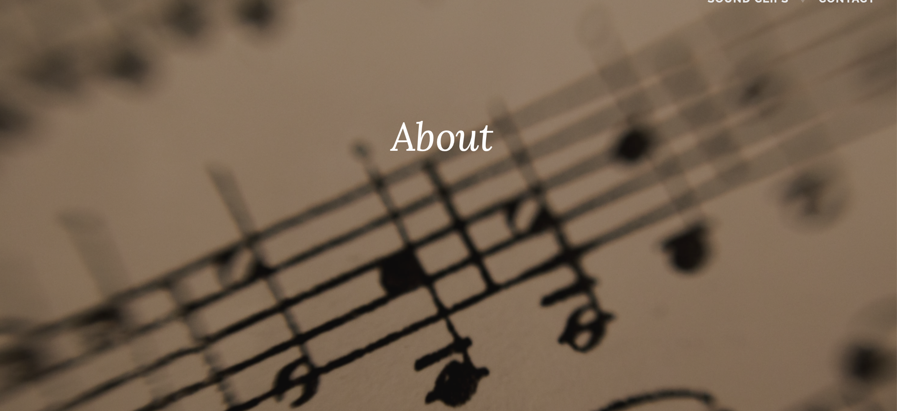

Preview of Dataset
First Dataset
artist_name
1 Claude Debussy
2 Sergei Rachmaninoff
3 Frédéric Chopin
4 Sergei Rachmaninoff
5 Sergei Rachmaninoff
6 Frédéric Chopin
track_name popularity
1 Rêverie, L. 68: Rêverie 61
2 Piano Concerto No. 2 in C Minor, Op. 18: 2. Adagio sostenuto 60
3 Waltz in C-sharp minor, Op. 64 No. 2 54
4 Piano Concerto No. 2 in C Minor, Op. 18: 1. Moderato 49
5 Piano Concerto No. 2 in C Minor, Op. 18: 3. Allegro scherzando 43
6 Nocturne in E-Flat Major, Op. 55, No. 2 45
year genre danceability energy valence
1 2012 classical 0.296 0.00896 0.0673
2 2012 classical 0.194 0.05450 0.0385
3 2012 classical 0.191 0.01570 0.0869
4 2012 classical 0.144 0.11100 0.0393
5 2012 classical 0.319 0.14800 0.0670
6 2012 classical 0.209 0.00759 0.0593Second Dataset
name
1 Polonaise-Fantaisie in A-Flat Major, Op. 61
2 Piano Sonata No. 2, Op. 35: IV. Finale. Presto
3 Nocturne in F-Sharp Major, Op. 15, No. 2
4 Nocturne F Minor, Op. 55, No. 1
5 Mazurka in F Minor, Op. 7, No. 3
6 Andante spianato in E-Flat Major, Op. 22
artists year danceability energy popularity
1 ['Frédéric Chopin', 'Vladimir Horowitz'] 1928 0.210 0.2040 1
2 ['Frédéric Chopin', 'Vladimir Horowitz'] 1928 0.170 0.0823 1
3 ['Frédéric Chopin', 'Vladimir Horowitz'] 1928 0.305 0.0830 1
4 ['Frédéric Chopin', 'Vladimir Horowitz'] 1928 0.337 0.0699 2
5 ['Frédéric Chopin', 'Vladimir Horowitz'] 1928 0.355 0.0452 2
6 ['Frédéric Chopin', 'Vladimir Horowitz'] 1928 0.188 0.0891 3Overview of Dataset
The first dataset I am using is filtered from an original, larger dataset that included 1 Million song tracks between 2000 and 2023. This original dataset was retrieved from Spotify platform using the Python library “Spotipy”. This allows users to access music data provided via APIs. The larger dataset collected also includes 19 features, a total of 61,445 unique artists and 82 genres in the data.
The second dataset I am using is a spotify dataset from a PySpark Course. All the variables in this dataset corresponds and has the same function with the first dataset. Other than the fundamental variables like names of the tracks the values for the musical elements such as the danceability was extracted using an algorithim geneerated by Spotify based on a range of technical parameters. I will be using this dataset as a prediction dataset to reflect how popular classical music was predicted to be in the following years.
Features/Variables of Datasets
- Popularity refers to the popularity of the track by the public. The popularity rating ranges from 0 to 100.
- Year refers to the release year of the track.
- Energy refers to the level of intensity and activity of the piece (from 0 to 1).
- Danceability refers to the level of liveliness of the piece (from 0 to 1).
- Valence refers to the level of music positivity. This means that pieces with higher valence are usually more upbeat and happy, while pieces with lower valence are usually sadder and slower.
- Name refers to the name of the piece.
- Artists refers to the artist of the piece.